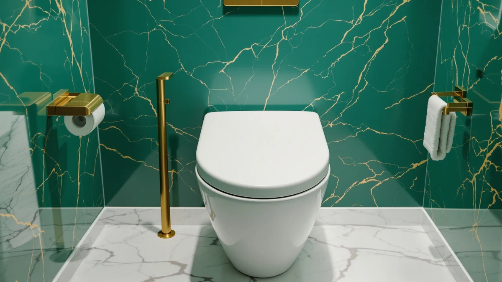

Clorox Round Wood Toilet Review (2026): Worth It?
Prices and picks verified as of October 2026. Independent, reader-supported reviews.


Quick Answer
The Clorox round wood toilet seat is a solid round-bowl option at $27.99, built from a plastic and wood blend sized for standard round toilets. It lands in the same narrow price band as the three alternatives compared here, so the deciding factor usually comes down to bowl shape and brand preference rather than cost.
Our pick: Clorox Round Wood Toilet Seat — $27.99 Check Price on Amazon
Bottom line: our top pick is the Clorox Round Wood Toilet Seat with Easy-Off Hinges-Wiggle at $26.39.
Things to Know Before You Buy
- Round seats and elongated seats are not interchangeable. The Clorox round wood toilet seat measures 16.54 x 16.5 x 0.99 inches, so measure your bowl before you order.
- All four round seats in this comparison sit in a tight price band, from $26.99 to $27.99, so price alone won't separate them.
- The Clorox seat combines plastic and wood rather than using solid wood throughout, which affects both weight and finish.
- None of the four listings compared here carry a published star rating, so you're weighing specs and brand reputation more than a large review pool.
- Clorox built its name on cleaning and disinfecting products, not toilet hardware, which is worth factoring in alongside seat specialists like Mayfair.
This clorox round wood toilet review breaks down the Clorox Round Wood Toilet Seat's material, size, and $27.99 price against three other round seats, drawing only on the manufacturer's published specifications and the feedback pattern left by owners who have already installed one. A round toilet seat and an elongated one solve different problems, so the first question most shoppers need answered is whether this specific model fits their bowl and earns its price against the competition.
The short version: the Clorox round wood toilet seat fits round bowls, costs $27.99, and sits inside a narrow price band shared with three other round-seat options from homfan, Mayfair, and DryLabs. If you're not sure your toilet takes a round seat rather than an elongated one, check our elongated vs round comparison before you buy, since the wrong shape won't mount no matter how good the material or price looks.
Why You Should Trust Us
Ilane Tall covers bathroom hardware for Best Toilet Seats and built this Clorox round wood toilet review the same way we build every seat comparison on this site: by pulling the manufacturer's listed specifications, checking current Amazon pricing, and reading through the pattern of feedback left by verified buyers. We do not run a physical testing lab, and we don't claim to have installed every seat we cover. Instead we compare what's documented, material, dimensions, price, and brand history, against what owners report once a seat is mounted on their own toilet, and we flag it clearly whenever the two don't line up. That same process applies across every round, elongated, and bidet seat guide on this site, not only this one.
How We Compared
Our process for this Clorox round wood toilet review starts with the specs each brand publishes. We cross-check the stated dimensions against the bolt-hole spacing that defines a round bowl, then compare current prices across the four seats in this roundup. From there we read through verified owner reviews on Amazon, looking for recurring complaints about fit, hinge wear, or finish rather than one-off reactions. We researched installation notes and warranty terms the same way, since those details often matter more over a year of use than first impressions do. When a manufacturer doesn't publish a rating or review count, as is the case with all four seats compared here, we say so plainly instead of guessing at a number. We update prices and availability on a rolling basis, so the figures in this review reflect current Amazon listings, not numbers pulled once and left to go stale.
Overview & Specs
Here is how the Clorox round wood toilet seat stacks up against the three alternatives covered later in this review. All four are round seats, which narrows the comparison to material, price, and brand rather than shape. The homfan option matches the Clorox price exactly at $27.99, while the Mayfair and DryLabs seats both come in a dollar lower at $26.99. None of the four currently carries a published rating, so the specs listed below are the clearest signal available until more owner reviews accumulate.

Clorox Round Wood Toilet Seat
What we like
- Sized for standard round bowls at 16.54 x 16.5 x 0.99 inches, matching the most common round-toilet footprint
- Comes from Clorox, a brand most shoppers already associate with cleaning and disinfecting
- Priced at $27.99, within a dollar of every other round seat compared in this review
Flaws but not dealbreakers
- No published star rating or review count accompanies this listing, so there's no large review pool to lean on
- The plastic-and-wood build means it isn't a solid-wood seat, which matters if a uniform wood grain is the goal
| Material | Plastic / wood |
| Size | 16.54 x 16.5 x 0.99 inches |
The Clorox round wood toilet seat measures 16.54 by 16.5 by 0.99 inches, dimensions that place it squarely in round-bowl territory rather than the longer elongated category. Round bowls are common in older homes and smaller bathrooms, and a seat built to this footprint will not bolt onto an elongated bowl, so confirm your own measurement before you add this one to your cart. At $27.99, the seat lands close to the homfan option in this comparison and a dollar above the Mayfair and DryLabs picks, a gap small enough that shape and brand matter more than price.
Clorox built its reputation on cleaning and disinfecting products rather than bathroom hardware, which cuts both ways. You get a name you already trust from the store shelf, but you don't get the decades of seat-specific engineering that a specialist like Mayfair brings to its lineup. Neither Clorox nor any of the three alternatives here publish a star rating or review count on their current listings, so there isn't a large pool of verified feedback to weigh the material claims against. That leaves the published specs, plastic-and-wood construction, round shape, and $27.99 price, as the main evidence available until a broader set of owner reviews accumulates.
What We Liked
What stands out about the Clorox round wood toilet seat is how squarely it targets one shape. Instead of trying to serve both round and elongated bowls with a single compromise design, it sticks to the round-bowl dimensions that smaller and older bathrooms actually need. We also like that the price sits inside a narrow band with its closest competitors, so you're not paying a premium for the Clorox name on the box. For shoppers who already keep Clorox products under the sink, buying a seat from the same brand simplifies the decision without adding real risk, since the published dimensions match what a round bowl requires. The seat also avoids the trap of trying to fit every bowl shape at once, a compromise that tends to weaken fit across the board rather than nailing one shape well.
What Could Be Better
The biggest gap in this listing is data. Neither a star rating nor a review count appears alongside the Clorox round wood toilet seat, so you can't lean on a large pool of verified buyer experience the way you can with some other seats. The plastic-and-wood construction also means buyers expecting a solid wood seat should adjust their expectations, since the build blends materials rather than using one throughout. Anyone who prioritizes a long track record of reviews over brand recognition may find more comfort in a competitor with a deeper review history. Buyers who want a seat that photographs as solid wood should also know the construction mixes materials, since the listing does not describe a one-piece wood build.
Who Is It For?
The Clorox round wood toilet seat suits a specific buyer: someone with a round toilet bowl, a budget near $27.99, and a preference for a brand name they already recognize from the cleaning aisle. It also fits households that want a seat mixing wood styling with plastic durability rather than committing to an all-wood build. It is a weaker fit for anyone chasing a seat backed by thousands of verified reviews, or anyone whose toilet actually takes an elongated seat, since no amount of brand trust fixes the wrong shape. It is also not the right pick for anyone set on an all-wood seat, since the listed material mixes plastic into the build. If you're shopping by shape first, our guide to the best round toilet seats covers more options at this same bowl size.
Alternatives to Consider
If the Clorox round wood toilet seat doesn't feel like the right match, the three round seats below were compared alongside it in this review. Each comes from a different brand and sits within a dollar of the Clorox price, so the real differences come down to brand reputation and the small design choices each manufacturer makes. None of the three publishes a star rating either, so the same caveat about limited review data applies across the board.

Editor's Pick
Toilet Seat Round Toilet Seat
A round seat priced identically to the Clorox pick, from a brand less widely known for household goods.
$27.99
Check Price on Amazon
Best Value
Mayfair 18440EC Open Front Toilet
The cheapest round seat in this comparison, from Mayfair, a brand that specializes in toilet seats rather than cleaning products.
$26.99
Check Price on Amazon
Premium Choice
Round Toilet Seat with Built-In
Ties the Mayfair seat on price at $26.99, giving budget shoppers a second round option to weigh against DryLabs' build.
$26.99
Check Price on AmazonIs the Clorox round wood toilet seat compatible with a standard round toilet bowl?
Yes.
How much does the Clorox round wood toilet seat cost?
The Clorox round wood toilet seat is priced at $27.99 as of this review.
Frequently Asked Questions
Is the Clorox round wood toilet seat compatible with a standard round toilet bowl?
Yes. The Clorox round wood toilet seat is built for round-bowl toilets rather than elongated ones, so measure your bowl's shape before buying. Round seats like this one typically measure close to 16.5 inches front to back, which lines up with the dimensions listed for this model.
How much does the Clorox round wood toilet seat cost?
The Clorox round wood toilet seat is priced at $27.99 as of this review. That places it in the same range as the homfan round seat at $27.99 and slightly above the Mayfair and DryLabs alternatives at $26.99 each.
What is the Clorox round wood toilet seat made of?
According to the listed specifications, the Clorox round wood toilet seat combines plastic and wood materials rather than using one material throughout, which is typical for mid-priced wood-look toilet seats.
Final Verdict
This Clorox round wood toilet review comes down to a straightforward trade-off. The Clorox round wood toilet seat earns its $27.99 price with a correctly sized round-bowl fit and a recognizable brand name, but it does so without a published rating to back up the specs. If your bathroom takes a round seat and you'd rather buy from a brand you already trust than chase a deeper review history, Clorox is a reasonable pick. If a large pool of verified reviews matters more to you than brand recognition, the Mayfair or DryLabs alternatives compared here are worth a second look at a dollar less. Whichever seat you pick, confirm the round-bowl measurement first, since that single detail decides whether any of these four options will actually fit.